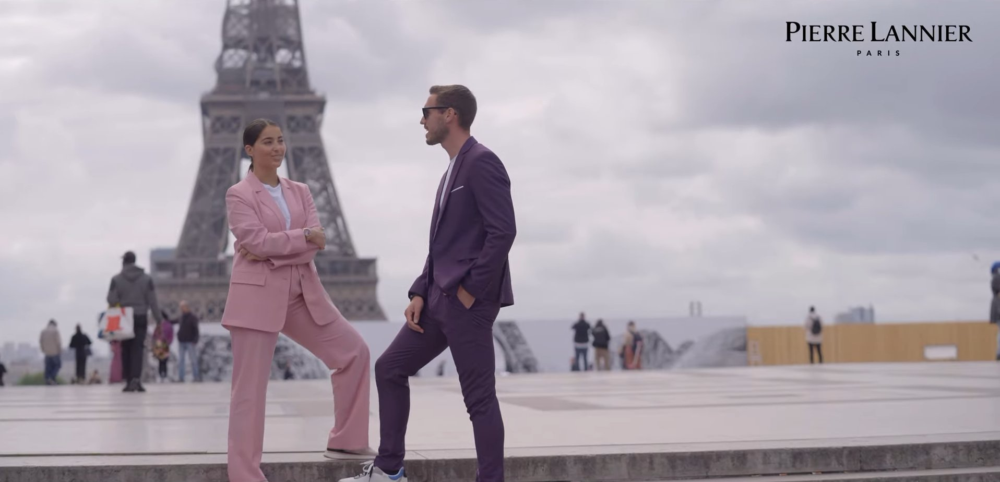

Vidéo Réalisateur & Vidéaste | Strasbourg, Alsace Fiction, courts-métrages, films de mariage, aftermovies, clips et films de marque
Films : réalisateur et vidéaste à Strasbourg et en Alsace, fiction, mariage, aftermovies, clips et films de marque
Réalisateur & Vidéaste